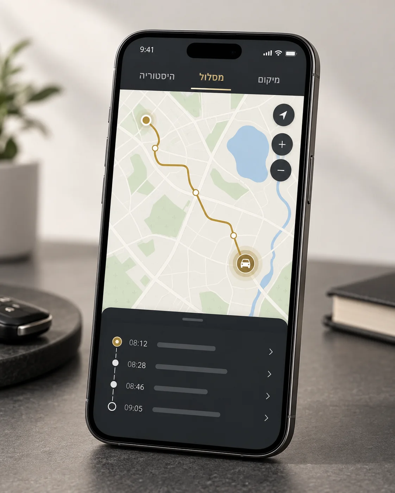

אפליקציה בעברית למערכת מצלמת הרכב: צפייה חיה בארבעת הערוצים, איתור GPS, מסלול נסיעה והיסטוריית מיקומים — בלי תשלום באתר, רק הזמנה ללא תשלום ושיחת התאמה.
החיבור הסלולרי של המערכת מאפשר לפתוח את האפליקציה ולראות את תמונת הרכב מרחוק. מתאים למי שרוצה לבדוק מה קורה סביב הרכב בלי להיות לידו.
4G / iOS / Android
02
כל מסך באפליקציה מסביר פעולה אחת.
צפייה בארבעת הערוצים — קדימה, אחורה ותא הנוסעים.

מיקום, מסלול והיסטוריית מיקומים במקום אחד.
03
צפייה חיה
ארבע זוויות בלי עומס.
מסך הצפייה מרכז את ערוצי המצלמה ומאפשר להבין במהירות מה קורה סביב הרכב. המסר פשוט: לראות, לבחור ערוץ, ולהמשיך הלאה.
תצוגת ארבעה ערוצים.
ממשק עברי ברור.
גישה מהנייד דרך חיבור 4G של המערכת.
04
GPS ומסלול
המיקום והדרך באותו סיפור.
מסך המפה מציג מיקום, מסלול והיסטוריית מיקומים בצורה נקייה. בלי רעש גרפי ובלי נתונים אישיים אמיתיים — רק המחשה של הפעולה.
איתור GPS.
מסלול נסיעה.
היסטוריית מיקומים.
05 / איתור GPS
לדעת איפה. לראות את הדרך.
מיקום הרכב על מפה, צפייה במסלול שהרכב עבר והיסטוריית מיקומים — מוצגים בצורה פשוטה וברורה למשתמש.
01
מיקום הרכב
איתור GPS של הרכב דרך האפליקציה.
02
מסלול הנסיעה
צפייה במסלול שהרכב עבר לאורך הדרך.
03
היסטוריית מיקומים
מבט מסודר על נקודות ומיקומים קודמים.
06 / מה הלקוח מקבל
אפליקציה אחת למצלמת הרכב.
העמוד הזה מסביר בפשטות מה האפליקציה עושה: היא מרכזת את הצפייה החיה, המיקום והיסטוריית המסלול של מערכת המצלמה. אין כאן הבטחות על יכולות שלא אומתו, אלא תיאור נקי של השימושים המרכזיים.